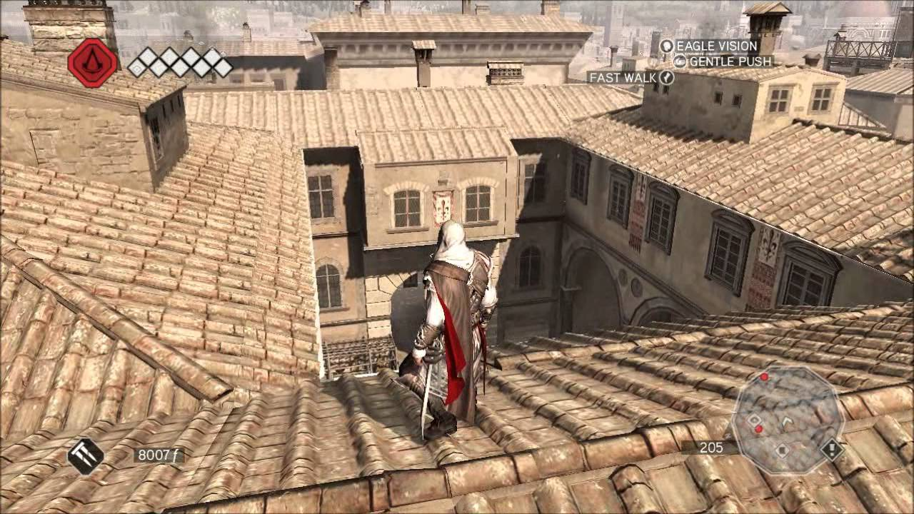

Assassin's Creed II is a 2009 action-adventure video game developed by Ubisoft Montreal and published by Ubisoft. It is the second major installment in the Assassin's Creed series, a sequel to 2007's Assassin's Creed, and the first chapter in the Ezio trilogy. The game was first released on the PlayStation 3 and Xbox 360 in November 2009, and was later made available on Microsoft Windows in March 2010 and OS X in October 2010. Several minor game related features could be redeemed on Uplay and three downloadable expansion packs were released on Xbox Live.
The plot is set in a fictional history setting and follows the centuries-old struggle between the Assassins, who fight for peace with free will, and the Knights Templars, who desire peace through control. The framing story is set in the 21st century and follows Desmond Miles as he relives the genetic memories of his ancestor Ezio Auditore da Firenze. The main narrative takes place at the height of the Renaissance in Italy during the 15th and early 16th century. Players can explore Florence, Venice, Tuscany and Forlì as they guide Ezio on a quest for vengeance against those responsible for betraying his family. The primary focus is to utilize the player's combat and stealth abilities, as Desmond begins to uncover the mysteries left behind by an ancient race known as the First Civilization in the hope of ending the conflict between the Assassins and Templars.

Players directly control the on-screen character through a third-person perspective and can control the camera, allowing for a 360° view of their surroundings.
The game takes place in an open world environment with nonlinear gameplay, allowing the player to roam freely within several regions of late fifteenth-century Italy such as Venice, Florence, Monteriggioni, Forlì, San Gimignano, Rome (The Vatican only) and the Tuscan countryside.
The Animus 2.0, a new version of the machine of the same name present in Assassin's Creed, provides in-game context for changes and additions to several game elements. A database is also available, providing extra historical information about key landmarks, characters and services that the player encounters.
The health system has been made more dynamic, with synchronization to the Animus and causing the character to recover only from minor injuries.[2] More grievous injuries require visiting a street-side doctor or use of medicine (which can be purchased from doctors or found on bodies).
Ezio Auditore da Firenze
Ezio Auditore da Firenze is a fictional character in the video game series Assassin's Creed.
His career as an Assassin during the Italian Renaissance serves as central plot of Assassin's Creed II, II: Discovery, Brotherhood, and Revelations, as well as the animated short film Embers. Ezio also makes an appearance as a playable character in the fighting game Soulcalibur V.